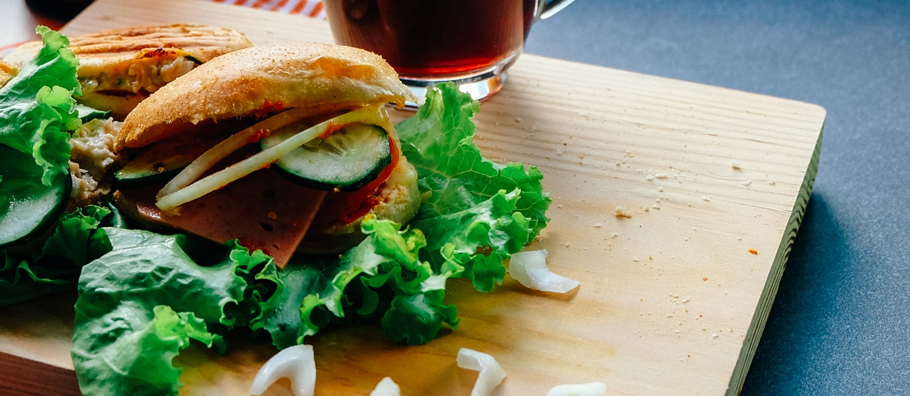
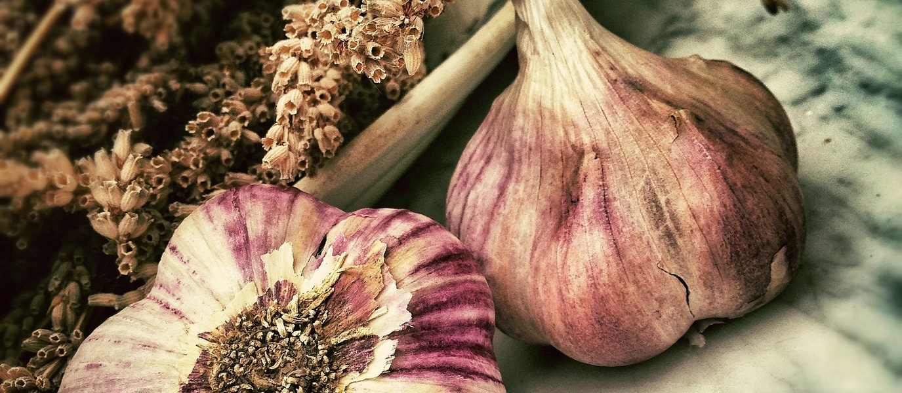

HOME
MENU
ABOUT US
CONTACT US
TANGY TACO MENU
Where tangy means the best!
 
TACOS
Kimchi Fish
Lightly floured cod with onion salad topped with kimichi and spicy mayo. . . .$5
Bulgogi
Korean BBQ marinated rib eye with Asian pico de gallo & chopped romaine. . . .$6
Chicken or Beef Terayiki
Teriyaki marinated chickenor beef with pjanko topped cucumber salad. . . .$6
Vegetarian
Marinated meaty portobello mushrooms with slaw and Tangy Taco's secret sauce. . . .$5
Grilled Tofu
Spicy-soy glazed fried tofu with soy-sesame slaw. . . .$5
Shrimp
Tangy sweet and sour shrimp with panko topped cucumber salad. . . .$7
SOUP/SIDES
Spicy Korean Chicken Soup
Korean pepper flakes, soy sauce, sesame oil, fresh kimchi, roasted wild sesame seeds, sesame leaf (Add rice or noodles +1). . .$4
Spicy Korean Rice Gnochhi
Crispy rice cake smothered in Korean red pepper glaze, topped with queso blanco and green onion. . .$4
Kimchi Arancini
(Crispy Rice Ball) kimchi fried rice combined with panko & Italian bread crumbs. . .$5
Kimchi Fries
Loaded with black beans, cheddar, queso blanco, chipotle aioli, pico de gallo, fresh kimchi, miso creama. . .$5
Homemade Kimchi
Traditional red kimchi, white kimchi, kimchi slaw, cucumber kimchi. . .$4
BEVERAGES
Hanoi Lychee Martini
Vodka, Lychee, Splash of Pineapple. . .$8
Bamboo
Cucumber infused Vodka, Sake, Jasmine tea, splash Pineapple. .$8
Lemongrass Dream
Lemongrass infused Vodka, muddled ginger & lime, ginger beer. . .$8
Suko Sangria
White wine, brandy, pureed granny smith apples, organic cane sugar, longon syrup & grapefruit. . .$8
Lemonade Ginger Iced Tea
Cool & refreshing organic lemonade with a subtle hint of ginger. . .$6
Soda
Variety of organic flavors. . .$3
Fiji Spring Water
Good ole H20. . .$2